Zrzuty przedstawiają aplikację z przykładowymi, wymyślonymi danymi (Mruczek, Pestka, Luna). Dotknij numeru na zrzucie albo punktu w opisie, aby je powiązać, albo użyj „Pokaż kliknięcia po kolei”.
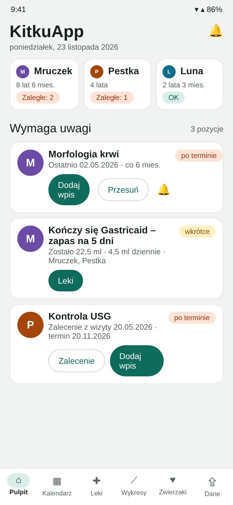
Pulpit
Pulpit to ekran startowy. Od razu widać, które zwierzaki wymagają uwagi i co trzeba zrobić.
- 1Dzwonek otwiera ustawienia przypomnień: co ile miesięcy które badanie, przypomnienia jednorazowe i powiadomienia.
- 2Kafelek zwierzaka otwiera jego profil. Kafelki są ułożone od zwierzaka, który najpilniej wymaga uwagi. „Zaległe” to liczba badań po terminie.
- 3Dodaj wpis otwiera formularz wizyty od razu z właściwym zwierzakiem i badaniem.
- 4Dzwonek przy alercie pokazuje go od razu jako powiadomienie w telefonie – tak to będzie wyglądać.
- 5Alert o kończącym się leku prowadzi do karty Leki, gdzie uzupełnisz zapas.
- 6Zalecenie otwiera wpis z wizyty, z którego pochodzi przypomnienie.
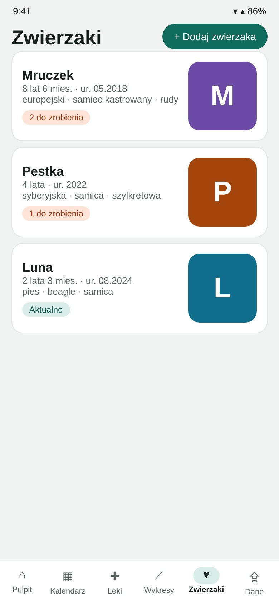
Zwierzaki
Lista wszystkich zwierzaków – najpierw te, które pilnie potrzebują badań.
- 1Dotknij zwierzaka, aby otworzyć jego profil z podsumowaniem zdrowia, dietą, terminami i historią. Kolejność: najpierw ci, którzy mają najwięcej do zrobienia.
- 2Dotknij zdjęcia, aby wgrać i wykadrować nowe.
- 3+ Dodaj zwierzaka: gatunek (kot albo pies), imię, data urodzenia (dokładna lub przybliżona), rasa, umaszczenie, waga, chip. Dla psa aplikacja stosuje psie normy i przypomnienia.
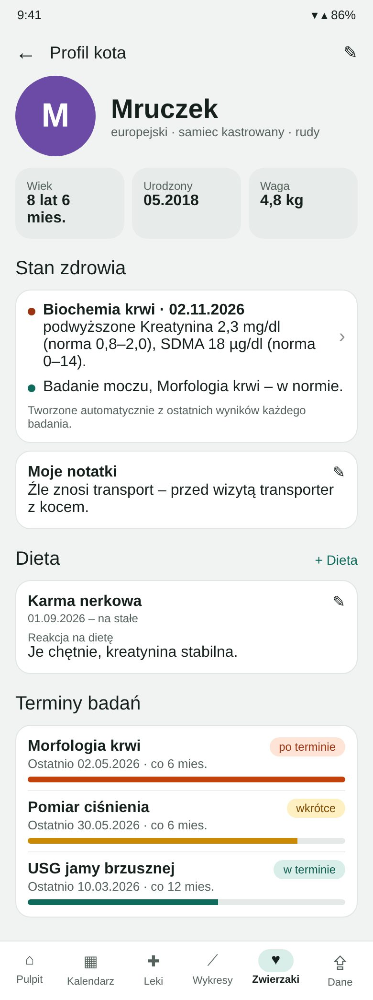
Profil zwierzaka
Najważniejsze informacje o zdrowiu jednego zwierzaka.
- 1Ołówek otwiera edycję danych zwierzaka (imię, gatunek, data urodzenia, zdjęcie…) i usuwanie.
- 2Stan zdrowia tworzy się sam z najnowszego wyniku każdego badania: na czerwono wartości poza normą (z normą w nawiasie), na zielono badania w normie. Zalecenia typu „kontrola za 12 miesięcy” nie są liczone jako problem. Dotknij pozycji, aby otworzyć badanie.
- 3Moje notatki – dotknij, aby dopisać własne uwagi.
- 4+ Dieta: nazwa, od kiedy, do kiedy lub „na stałe” i reakcja na dietę. Zakończona dieta przechodzi do historii.
- 5Dotknięcie badania w Terminach filtruje historię poniżej do wpisów z tym badaniem i przewija do niej.
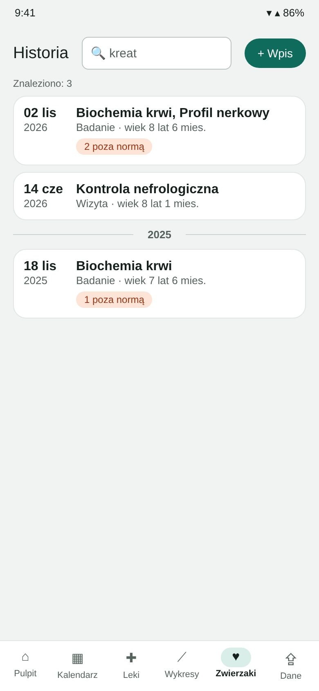
Historia zwierzaka
Niżej w profilu jest pełna historia wizyt, badań i diet.
- 1Szukaj filtruje historię na bieżąco – w tytułach, opisach, interpretacjach i lekach. Polskie znaki nie mają znaczenia.
- 2+ Wpis dodaje ręcznie wizytę lub wynik. Data w przyszłości tworzy zaplanowaną wizytę z przypomnieniem.
- 3Dotknij wpisu, aby zobaczyć szczegóły i wyniki. Po cofnięciu wrócisz w to samo miejsce listy.
- 4Kreska z rokiem oddziela wpisy z kolejnych lat.
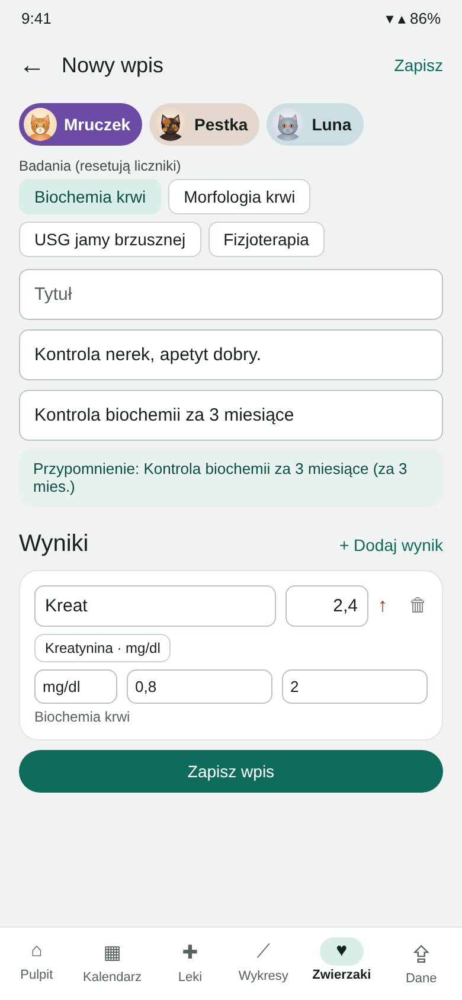
Nowy wpis
Ręczny wpis wizyty lub badania – z wynikami, które trafią na wykresy i do stanu zdrowia.
- 1Zaznacz badania. Przy badaniach z wynikami (np. biochemia) trzeba podać co najmniej jeden wynik, przy USG, RTG czy echu – opis. Fizjoterapia to wpis tylko z opisem zabiegów i zaleceniami.
- 2Zalecenia osobno od opisu. „Za 3 miesiące” od razu tworzy przypomnienie.
- 3+ Dodaj wynik – kolejny parametr, np. waga, ciśnienie albo wynik krwi.
- 4Pisz nazwę parametru – aplikacja podpowiada parametry z wcześniejszych wyników i wpisuje jednostkę oraz normę. Strzałka ↑/↓ pokazuje wynik poza normą.
- 5Jednostkę i normę możesz zmienić. Nowy parametr przy kilku zaznaczonych badaniach – aplikacja zapyta, do którego należy.
- 6Zapisane wyniki trafiają na wykresy i do stanu zdrowia.
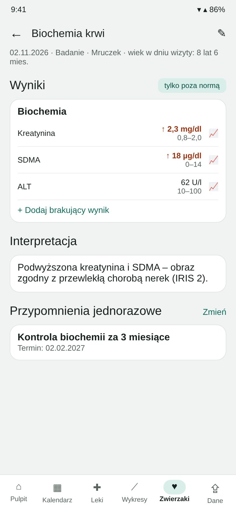
Szczegóły wpisu
Pełny opis wizyty lub badania: wyniki z normami, interpretacja, zalecenia.
- 1Ołówek: edycja wpisu (data, tytuł, opis, waga) albo usunięcie.
- 2Przełącznik pokazuje tylko wyniki poza normą – przydatne przy długich panelach.
- 3Dotknij wyniku, aby go poprawić (wartość, jednostka, norma). 📈 otwiera wykres tego parametru w czasie.
- 4+ Dodaj brakujący wynik – gdy import pominął jakiś parametr.
- 5Przypomnienia wykryte w zaleceniach (np. „kontrola za 3 miesiące”). Zmień prowadzi do ich edycji.
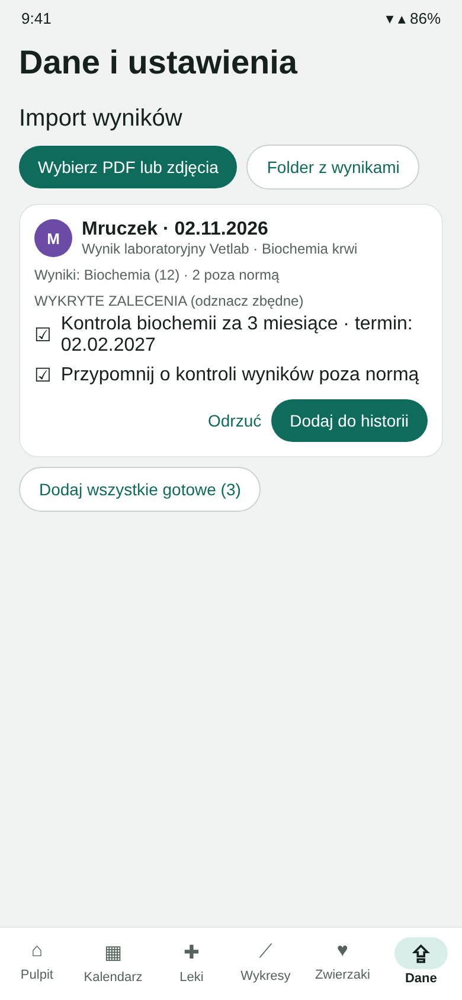
Import wyników
Wyniki z PDF-ów i zdjęć z kliniki trafiają do historii bez przepisywania.
- 1Wybierz PDF lub zdjęcia – karty wizyt, wyniki z laboratorium, opisy USG, TK, echa serca, skany. Można wybrać wiele plików naraz.
- 2Folder z wynikami – wskaż folder (np. pobrane z poczty), a „Sprawdź nowe” wczyta tylko pliki, których jeszcze nie było.
- 3Gdy są wyniki poza normą, aplikacja może dodać przypomnienie o kontroli za miesiąc.
- 4Sprawdź, czy zwierzak i data się zgadzają, i dodaj do historii. Duplikaty (ten sam zwierzak i dzień) są wykrywane.
- 5Dodaj wszystkie gotowe zapisuje naraz wszystkie rozpoznane dokumenty.
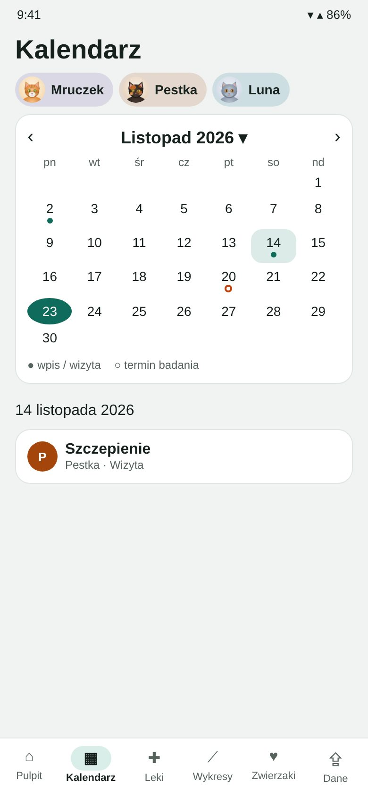
Kalendarz
Wszystkie wpisy i terminy badań w jednym miejscu.
- 1Filtr zwierzaka – pokaż wszystkie albo tylko jednego.
- 2Dotknij nazwy miesiąca, aby od razu wybrać miesiąc i rok. Strzałki przesuwają o miesiąc.
- 3Dzień z kropką ma wpisy, kółko oznacza termin badania. Dotknięcie dnia pokazuje listę poniżej.
- 4Dotknij wpisu, aby go otworzyć. Po powrocie kalendarz pokaże ten sam miesiąc i dzień.
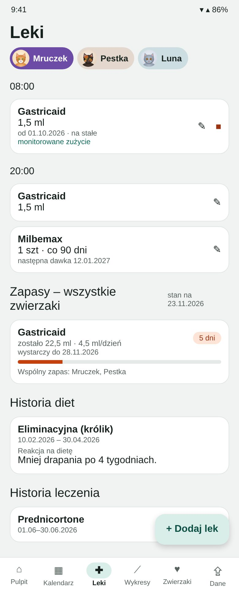
Leki
Leki podawane każdemu zwierzakowi, pogrupowane według godzin, i zapasy.
- 1Wybór zwierzaka – zdjęcie, a w tle kolor zwierzaka (ten sam co na wykresach).
- 2Ołówek: edycja leku (godzina, dawka, co ile dni, okres, zapas).
- 3Zakończ podawanie – lek przechodzi do historii leczenia.
- 4Zapasy: ile zostało i na ile dni wystarczy, liczone ze wszystkich zwierzaków dostających ten lek. Dotknij, aby wpisać nową ilość po zakupie. Przy 7 dniach i mniej pojawi się alert na Pulpicie.
- 5+ Dodaj lek otwiera okno nowego leku (następny obrazek).
- 6Historia diet – zakończone diety zwierzaka z reakcją na dietę (widoczne też w historii profilu).
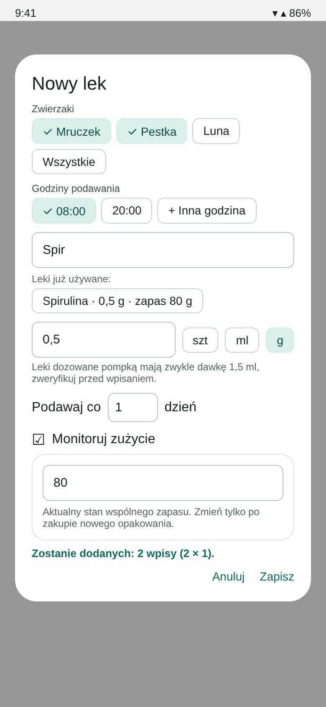
Nowy lek
Jeden lek można dodać od razu kilku zwierzakom i o kilku godzinach.
- 1Zaznacz kilka zwierzaków naraz (albo „Wszystkie”).
- 2Zaznacz godziny – spośród już używanych albo dodaj inną. Powstanie wpis dla każdej pary zwierzak × godzina.
- 3Przy wpisywaniu nazwy pojawiają się podpowiedzi leków już używanych (także przy literówce). Wybranie podpowiedzi wpisuje dawkę, jednostkę i aktualny zapas.
- 4Podawaj co X dni – np. odrobaczanie co 90 dni.
- 5Monitoruj zużycie – wpisz posiadaną ilość, a aplikacja policzy, na ile dni wystarczy.
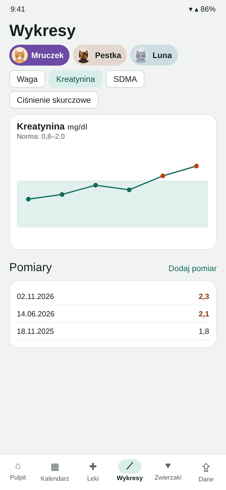
Wykresy
Zmiany wyników w czasie – z zaznaczoną normą.
- 1Wybór zwierzaka.
- 2Wybór parametru – waga, ciśnienie i każdy wynik liczbowy z historii.
- 3Zielony pas to norma, czerwone punkty – wyniki poza normą.
- 4Dodaj pomiar – np. waga z domowej wagi albo ciśnienie zmierzone w domu.
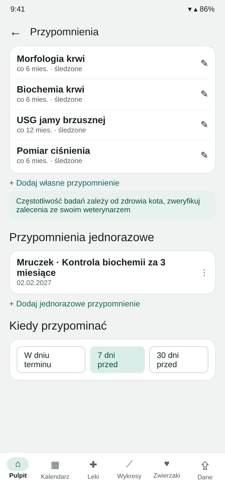
Przypomnienia
Co ile miesięcy które badanie i kiedy dostawać powiadomienia. Otwierane dzwonkiem na Pulpicie.
- 1Dotknij badania, aby zmienić częstotliwość, nazwę, śledzenie albo je usunąć.
- 2Własne przypomnienia – np. odrobaczanie co 3 miesiące.
- 3Przypomnienie jednorazowe: zmień termin, edytuj, przenieś na innego zwierzaka albo usuń.
- 4Nowe przypomnienie jednorazowe – termin datą albo „Za N miesięcy”.
- 5Z jakim wyprzedzeniem badanie ma się pojawiać jako „wkrótce” i w powiadomieniach.
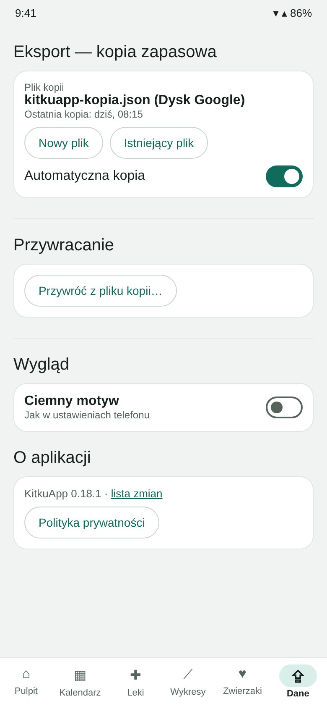
Kopia, wygląd i informacje
Dalsza część karty „Dane i ustawienia”.
- 1Wskaż plik kopii – nowy albo istniejący (np. na Dysku Google). Dane zostają na telefonie i w tym pliku, nigdzie indziej.
- 2Automatyczna kopia zapisuje plik po każdej zmianie danych.
- 3Przywracanie wczytuje dane z kopii – np. na nowym telefonie.
- 4Ciemny motyw – włącz, wyłącz albo zostaw „jak w telefonie”.
- 5Historia zmian aplikacji i polityka prywatności.